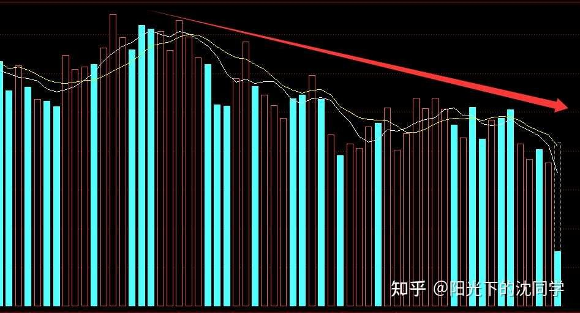
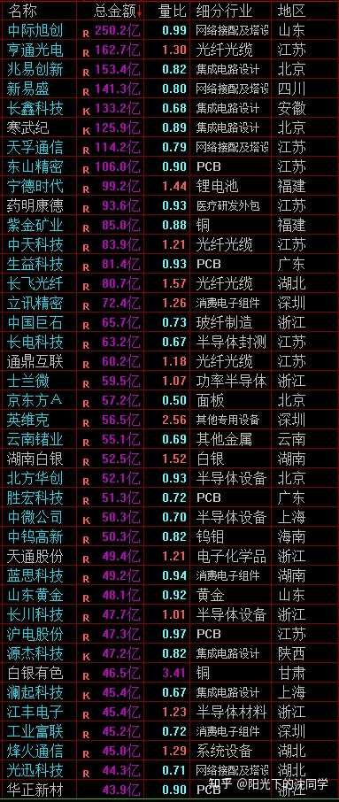
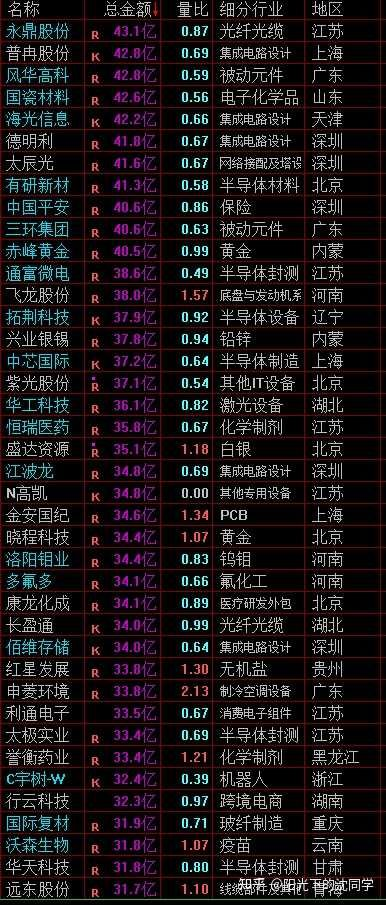
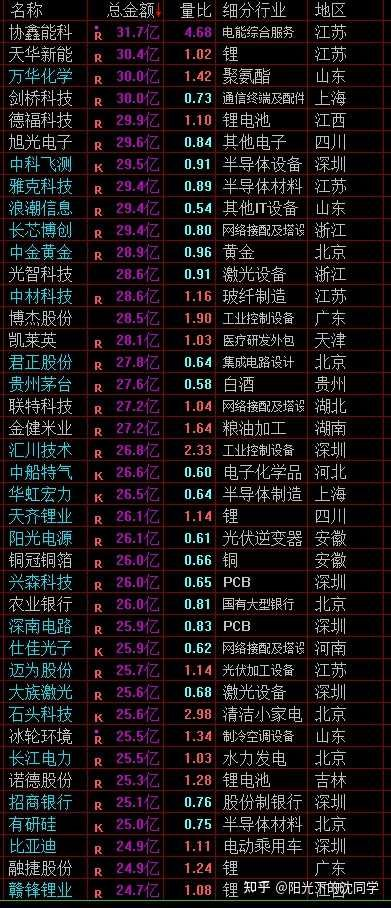

本文的核心逻辑在于‘存量博弈下的防御性生存策略’。作者指出，当前市场处于成交量萎缩的下跌趋势中，本质上是缺乏增量资金的‘存量互掏’阶段。在这种环境下，市场不再有普涨行情，资金会向具备高股息、低估值及长期成长性的资产（如红利、白马、出海龙头）集中。作者的因果传导链是：成交量萎缩导致市场活跃度下降->风险偏好降低->资金抱团防御性资产->短线博弈难度加大。因此，核心策略是‘控制仓位+现金为王+分批吸筹’，通过降低交易频率来匹配市场节奏，避免在下跌趋势中频繁操作导致本金损耗。
在这种缩量+下跌趋势注【本质逻辑】成交量是资金的‘投票结果’。缩量下跌意味着卖盘虽不汹涌，但买盘极度匮乏，市场处于‘阴跌’状态，缺乏承接力。【新手提示】不要试图抄底，因为没有成交量支撑的反弹往往是诱多，极易被套。的行情里面，千万不要被短期盘中拉升迷惑，买贵了很难赚钱，每次杀跌才是好买点
当前成交量慢慢退潮的趋势非常明显
之前2.5万亿是一个低点成交量，现在是比较极限成交量
一旦成交量不断减少下去，市场失去了增量资金，场内都是量化，游资，散户在里面博弈，赚钱就会越来越难
存量资金的互相掏兜行情是很难做的，需要极具耐心，留得住现金，一旦加仓快了，就会非常被动
大家需要思考怎么比其他人投资者买的更便宜，这个才是提升胜率的核心点
因为成交量某种意义上来讲就是胜率的核心指标，也是资金面的关键
市场上成交量大，活跃的股票多，市场上参与者多，你到处套兜才能成功
人越来越少，也没什么交易，就几个人互相掏，掏来掏去都是高手，最终谁都赚不到钱，那股价只能通过不断走低来提升性价比，下跌趋势就是这样形成的
没有更多人愿意不断出高价接盘，价格就会一直下降
熊市末期，成交量非常非常低迷，大家也可以复盘看看，一些股票牛市100块钱抢着买，交易不断，熊市5块钱都没有人要
所以成交量非常重要，资金面的变化非常重要，尤其是短线投资者，博弈的胜率
只要资金面和成交量情况不对劲，胜率就会下降，你除非运气非常好，不然就是很难做，谁都难做，还不如控制好仓位，多留现金，把自己的交易节奏慢下来，跟上市场的节奏
你交易频繁，但市场越来越慢，你的节奏和市场不匹配，做的也是无用功
继续关注市场成交量，资金面的变化，尽可能总仓位60%以内，千万不要满仓，多留现金，没有大跌不加仓，加仓也要慢慢加
以上是未来很长一段时间最重要的实战策略，千万要谨记！

图中显示明显的下降趋势线，高点不断下移。这反映了市场多头力量在每一次反弹中都迅速耗尽，空头占据绝对主导地位。新手应识别出这种‘下跌趋势’，严禁在趋势未扭转前重仓博弈。
每天原创不易，读者朋友千万不要忘记点赞支持一下
正所谓先赞后看，腰缠万贯
大家可以先点一波赞，我们再继续慢慢聊
祝点赞的朋友福寿无量，天天开心
指数方面走势很清晰，目前还会运行在3950-3650区间，下跌是买入机会，但节奏不能太快，因为成交量很弱，反弹高点大概率低于之前，很多股票没办法新高，不需要那么激进加仓
后面还是会有反弹，就是每一波反弹高点会越来越低
反弹以后继续下跌，那么现在处于一个下跌行情，可以慢慢吸筹一波，后面反弹起来要继续获利了结，仓位要降下来，把握好这个波段节奏
等3950-3650运行的差不多了，也来来回回反弹下跌好几轮了，后面如果还是行情没有好转，那肯定会往更深的低点去继续探底，下跌趋势就是这样的一个走势
而且随着市场成交量越来越低，存量资金会更加挑剔
如果不是底部扎实，股息稳健，估值低的红利，白马蓝筹，高端制造，出海龙头，低位优质科技这种确实未来很有爆发力的，其他大部分方向和股票都会慢慢失去交易，股价会不断走低
其实大部分概念股，热点，妖股，都是牛市，上升趋势，成交量活跃期间的产物的
是市场风险偏好高的时候才会有的机会，一旦市场冷静下来，大家都怕亏钱，都从长计议
那真正可能稳得住，或者还可以逆市上涨的，只有以上这种确实未来长期赚钱空间大，且胜率高，长期拿得住的好方向
按照我的实战经验来看，如果全球股灾，再叠加上证指数跌破3950-3600区间，或者去3600-3000区间这种情况发生
目前市场上最优质的一批红利和白马蓝筹也会探底，但因为之前几年表现本来就不太好，估值很低，那么也不至于跌的太离谱，有些已经筑底成功的，可能都不一定新低，就是回到低点附近就差不多
还没有筑底成功的可能在之前底部方面再调整个15%-25%也差不多，基本上是下跌空间可控，下一轮牛市上涨空间很大
高端制造，出海龙头，低位优质科技他们会波动大一点，但也弹性大，他们属于行情一旦好起来股价有好几倍空间，但真的遇见大熊市，当然下跌空间也比低位红利和白马蓝筹大一点，可以越跌越买，但节奏需要慢一点
其实就是回购，现金流，估值，分红，业绩成长性来共同决定投资者长期信心，决定最悲观的时候，还可以留下来多少投资者坚守
真的到了牛市，行情好起来了，成交量回来了，资金面好转，肯定是进攻性品种更好，各种热点，妖股，抱团又会崛起
但下一轮牛市抱团肯定有不一样的故事，是要多挖掘这一轮行情里面，没有怎么崛起的新兴行业，现在的低位科技，很多大概率就是未来行情里面新的主线和热点
故事是可以讲的，关键是这个方向有赚钱空间，筹码稳定，没有被大幅炒作，这种是大资金喜欢的
所以在下跌趋势里面去多看看低位科技，看看高端制造，出海龙头低位的下跌机会，其实也是在提前锁定未来行情好的时候可能被选择的抱团股
低位的红利和白马蓝筹更多的是长期的底仓，长期拿住，长线思维更好，尤其是红利，他们不容易突然大涨，都是比较慢节奏的慢慢推进，你拉长时间来看，复利很好，但看短期是节奏比较慢的，熊市表现会比较稳定，牛市也不容易短期翻倍，主要靠耐心，拉长持仓时间来提升收益
尤其是叠加股息复投注【本质逻辑】通过将分红再买入股票，利用复利效应降低持仓成本，在熊市中通过时间换空间。【新手提示】这是防御性配置的核心，适合长期持有，不要用短线思维去衡量红利股的收益。，才能看见更多收益，这些是可以安心去持有的，波段极大，一直可以熬到下一轮牛市白马蓝筹，红利这些估值推升到很贵了，确实感觉没有什么性价比了，再考虑是不是继续拿住或者是做一部分获利了结
现在基本上都在低位震荡筑底，没必要考虑这些品种过度交易的问题
只要好好筛选红利ETF，做好优化，然后把自己手里的这些股票研究好，剔除成长性一般般的，或者业绩暴雷，有问题的，其他的留下拿住即可
不需要因为短期行情波动去把手里的价值投资底仓动来动去
就像美股，黄金，债券这些一样，都是拿得住更重要
最适合新手投资者，上班族，股龄10年内投资者的投资策略分享
美股依旧没有加仓机会，拿住底仓即可
黄金没有定投机会，最近上涨比较快，不需要跟风加仓，成本优势不大
债券可以重视，闲钱配置，熊市里面债券是非常好的选择，可以让你闲钱有一个地方理财，而且可以用来控制仓位
我每次都会配置债券仓位30%左右，遇见非常大的熊市行情，这笔钱帮我巨大忙，因为我每次都没办法抄底到最低点，总是会提前满仓，这个确实不可避免，到了最绝望的时候，债券仓位就可以拿出来用
如果你没有配置债券，你肯定没办法在大熊市买到更多廉价筹码，因为我们千算万算还是会提前满仓
你只有平时就配置好债券，等到了那个时候，自然可以用这笔钱来继续收集廉价筹码，非常好用，到时候大家就明白了
不经历几轮大熊市，大家永远不会理解仓位控制，现金有多重要，也不会理解债券仓位的重要性
红利目前整体很便宜，值得长期配置，分散配置各种优质红利ETF，认真筛选成分股，还可以再来几个高股息的好公司，央企垄断企业更优质，这些都可以长期股息复投，作为养老资产去慢慢配置
拉长时间来看，美股和红利都可以轻松跑赢其他宽基，复利非常好，非常稳健
尤其是5-8年以上跨度，没有对手
5年以内还是有不少对手的，3年以内对手更多，很多妖股，热点可以累计巨大收益超越美股和红利收益
但一旦到了5年以上，8年以上，各种妖股，热点基本上会跌回去，长时间的价值投资，实际上最好赚钱的就是美股和红利
黄金作为长期抗通胀品种，比持有现金好，可以一直拿，不要在意黄金短期波动，等大家长期投资了黄金就知道，你心态好比什么都重要
债券上面已经聊过了，是一个理财+兜底的核心配置，关键时候有大用处，平时复利也不错，比理财产品好
大家构建一个这样的投资者，可以让你长期的投资复利7%-15%，跑赢市场上大部分基金经理，不需要买他们的基金，不需要给他们管理费
你自己懂这些投资，拿得住，就可以做好投资
但这个道理新手投资者要不不知道，要不还是太贪，想一夜暴富，不想慢慢变富
但凡是实战经验8年以上的老玩家，还没有退出股市的，不可能手里没有这些配置，不然就一定是亏钱的，就是那种一直满仓博弈的，一直赚不到钱的，这种也有，就是永远没办法改变自己的心态，永远在等一夜暴富，属于确实没办法成长的
大部分投资者在碰壁以后，都会底仓配置美股，红利，黄金，债券这些，都会分散投资，都会明白长期拿得住的重要性
并不是说这些东西我天天聊，就其他人不知道，实际上老股民大部分都知道，只不过很多人不喜欢分享，也不爱打字，不想说那么多
但具体肯定是很多人在这样做的，就是一个经验成长的过程，你明白了投资很难，很容易亏钱，投资容易影响健康和提心吊胆以后，你不可能无动于衷
你一定会寻找一个心态更好，赚钱更舒服的方法，你就会开始理解长期复利的重要性
你就会拿得住这些长期资产，这个过程是潜移默化的
谁刚刚开始投资不想一夜暴富，年轻人都喜欢做短线，我自己最开始投资也是做短线，我也是很喜欢这种博弈，都一样
年纪大了，体验的实战多了，就会有很多新的变化，短线仓位自然会不断下降，长线仓位会不断提升
就像人也会不断成长，不会总是做一些冲动，无厘头的事情，但在年轻时候，大家都患得患失做过很多年轻人错误的事情，很正常的
投资就是人生，人生的道理和阅历一样可以运用在投资上面，是相辅相成的
我好像记得某一个投资大师说过，40岁之前没有价值投资还是说40岁之前的人不怎么懂投资，大概是这样一个意思的一句话
实际上重点不是40岁，而是说你经历不够，阅历不够，在股市实战的不够，你就不懂长线和价值投资的重要性
你就必然需要走一些弯路，当然也是必经之路之后，才能懂得，这个就和人成长的过程是一样的
不管未来行情怎么样，大家把长期投资的品种配置好，拿住，真的未来有大跌安心加仓即可
准备好现金仓位，不要怕股灾，股灾来了反而是买入机会
行情就是周期，没有股灾哪来的牛市？
没有大跌也没有大涨，涨涨跌跌才有差价，才有周期，才有利润
控制好仓位，不要总是满仓，自然可以跟得上节奏
一切投资的问题根源，都是在仓位控制没有做好上面，大家平时自己也可以好好复盘，就会发现，牛市，熊市都有机会，也都是机会
但如果没有控制好仓位，就是被动的，就是什么机会都参与不了，很容易深套，有机会也没钱
遇见问题，发生亏损不是大问题，你不去总结错在什么地方，不去改变才是大问题
职业投资者最最重视的都是风险问题，是怎么去优化仓位，怎么控制仓位，然后才是选择，坚守，调整心态

该表列出了宽基指数的估值水位。通过对比‘合理’与‘泡沫’区间，作者在进行心理锚定。新手应利用此表作为仓位管理的参考，即在‘低估’区间分批布局，而非在‘泡沫’区间盲目追高。
大家有任何投资疑问，有什么想交流的都可以付费咨询，想单纯支持一下也可以
【在知乎上我的主页咨询即可，没有任何群，不搞私下小圈子】
家庭资产长期稳健配置方案分享，仓位优化，估值分析，行业分析，心态调整，各种投资学习技巧都可以咨询
大家的支持和尊重是我创作的最大动力
感恩大家每天的付费咨询和打赏，感谢大家对知识的尊重，感谢大家对我的支持
欢迎提问
---
适合职业投资者，10年以上经验老股民，基本功极其扎实投资者的实战分享
继续聊实战
行情节奏在变化，并且未来每次反弹高点会越来越低，要控制好仓位
我自己是继续在下跌中慢慢加仓
最近加了一些错杀港股
然后继续买入低位高端制造，出海龙头，低位科技，这些方向长期有机会，跌下来继续买入
白马蓝筹最近跌幅没有那么大，买的不多
黄金，美股没有加仓，债券闲钱配置
未来如果继续下跌会继续加，也会尝试做一些新筛选出来的企业，试一试股性，开点新仓
这一轮下跌肯定后面有反弹，但上证指数大概率会被3950附近压制，之前高点是4000点附近，到没有到，这一次反弹肯定会再低一点，成交量也不够，就是一波低于一波
反弹就不要加，下跌的时候收集自己看好的筹码，A股，港股都不错，都有很多机会
港股在12月成分股调整完毕之前肯定波动会比较大，但有杀跌机会还是看好的，作为长期配置，港股有很多好公司，所以下跌会继续加仓
短线仓位做波段为主，下跌慢慢加，反弹的时候t出去，即使是下跌趋势，也一样会是震荡波段机会，暂时不会有大的单边杀跌行情
只要在杀跌的时候买低位优质品种，胜率依旧会不错，并不需要全面否决现在的机会，只不过是赚钱越来越难，胜率越来越低而已
追高是目前最不好，最应该杜绝的交易，每次反弹起来大概率都会下来的，还是跌下来加比较安心，选择空间更大
对应新手投资者来说，你拿住美股，红利，债券，黄金，包括一些长期优质企业，也不需要想那么多，这些东西长期没有大问题，拿住就好，真的崩了都可以继续加
未来最难受的还是短线博弈，这个挺难，成交量不大的情况下真的很难做，安心做长线价值投资的朋友，最多是比较无聊，但还是比较好做的，拿得住即可



风险提示：股市有风险，入市须谨慎
今天是坚持写复盘笔记的第1508天【每日打卡】
下面是我自己多年来的一些重要的心得感悟，分享给大家，会不定期增加内容
1，
长期投资成功的关键是稳定的情绪和沉稳的性格，这些比过人的天赋更重要
2，
最终我们穷其一生获得的一切经验、知识和所有财富都需要转化为自身的品德修养，不然获得越多失去越多
自身的修养是留住各种财富最好的容器，富裕一时不难，富裕一生不易
珍惜获得的一切，保持初心、慈善、知足，让自己的德行和财富共同成长，才能方得始终
3，
古之成大事者，不惟有超世之才，亦必有坚忍不拔之志
想成为优秀的投资者一定要持之以恒，不断学习，反思，总结，在投资中获得的各种经验最终都会成为你财务自由的砖瓦
4，
再高的智商也一样会被情绪一瞬间冲垮
大部分的亏损都来源于投资者的冲动和情绪化交易，学会控制自己的情绪和心态才能长期稳定的复利
5，
富在术数，不在劳身
一定要多思考，任何时候想清楚了再交易，漫无目的的交易，只会多做多错
6，
利在势居，不在力耕
投资赚钱主要靠把握时机，没有机会就休息，多留现金
做可以让自己心安的投资，便是对于你来说最好的盈利模式
7，
谨记：贪念起，万念俱灰！
控制住了风险，利润会随之而来
富贵险中求，也在险中丢
求时十之一，丢时十之九
仓位情况【不推荐模仿】
短线博弈仓位：13%
长线+短线总仓位尽可能低于60%，这样更符合当前行情的风险程度
长线资产配置目前个人分散持有：各种债券ETF+各种核心红利ETF+美股ETF+黄金+优质REITS+长期看好的优质企业+核心ETF
美，港，A股长线+短线所有股票持仓投资方向配置比例参考：
金融：【保险，银行，券商】15%
消费：【新消费+龙头品牌消费+游戏】：28%
生物医药：12%
AI产业链：10%
能源，动力【储能，电力设备，电力方向】：6%
高端制造【半导体，机器人，航天航空，军工，出海龙头】：25%
周期【化工化纤，新材料，核心矿产】：4%：
【每3-6个月更新一次】
最新更新时间2026年6月
全文总结：当前A股处于存量博弈的磨底期，‘耐心’与‘现金’是生存的核心。新手避坑法则：1. 严控总仓位（建议60%以内），留足现金应对极端行情；2. 放弃一夜暴富的短线幻想，将资金向红利、白马等防御性资产倾斜；3. 建立债券等低风险资产的底仓配置，作为应对股灾的‘救命钱’；4. 拒绝频繁交易，在下跌趋势中，不跌不买，反弹不追，通过时间换取复利空间。

![[查看表情]](https://pic1.zhimg.com/v2-b320268415ded1f1dddfd0ab14dd42ef.jpg?source=1d2f5c51){kind=link}
{kind=link}
抢第一！
依旧第一时间收藏起来慢慢看，先打卡一波
港股都卖了，我认为我不是很适合做港股，短期暂时不玩港股，目前仓位85%，都是养老分红的大机会底仓
今年要求不高，主要调整心态为主，确保自己证转银的20万可以忍住不入市就成功了90%，其他就是努力拿住底仓，不断股息复投，能不搞事情就是今年最大的收获
后面如果有大跌再考虑满仓，休息休息，磨炼一下自己心态
当然未来大跌也不是瞎买，只加我看得懂的，那些讲故事的，跌再多我也不碰
搁以前我肯定天天盯K线，信号差的时候都要刷新八百遍，生怕错过抄底机会
今天同事说守住一个股票比守寡都难，我感觉确实长期拿着不动很难受，一般人真的很难熬
真要修炼成功，做到拿得住现金，平常心对待市场波动，那不赚钱都难，我现在还差得远，慢慢修行吧
今天继续跟兄弟们聊天。昨天看到有兄弟说最近财运还不错，其实不怕兄弟们笑话，我最近一直在知乎研究戒赌……前段时间确实赚了一点，虽然放在知乎可能不多，但是对我来说还是挺震撼的，每天都大几万入账，根本没心情上班，天天打了卡就回家看股票或者睡觉。清仓以后一直就在想各种办法管住手，买长期债，证转银。现在一周过去了，整体仓位在10%以下，布局了两只长线。还是很开心每天能看看老沈的文章的，还能跟大家唠唠嗑。要不然真的很难管住手。现在收益每天就几百块，但是内心平静下来了。这段经历跟大家分享一下，如果有相同经历的兄弟姐妹可以借鉴。满仓确实赚钱，但是真的和赌博无异。最后记得提肛哦[爱]
8/26 老沈复盘概括（复盘 8/25 周二）
市场判断： 缩量 + 下跌趋势，成交量慢慢退潮趋势非常明显（2.5 万亿已是低点，现在接近极限成交量），存量资金互掏兜行情很难做。指数仍运行在 3950-3650 区间，后面还会有反弹，但每波反弹高点会越来越低（上次高点 4000 附近没到，这次反弹大概率被 3950 附近压制），等区间震荡差不多、行情仍无好转，就会向 3600-3000 更深区间探底。
核心观点： 缩量行情下别被盘中拉升迷惑，每次杀跌才是好买点，买到比人便宜才是胜率核心。控制好仓位、留得住现金，加仓节奏要慢、跟上市场节奏。能逆市稳住或上涨的只有：底部扎实、股息稳健、估值低的红利、白马蓝筹、高端制造、出海龙头、低位优质科技 —— 这些未来有爆发力且长期拿得住；大部分概念股、热点、妖股会随着量能退潮失去交易。重点：低位科技 / 高端制造 / 出海龙头是提前锁定下一轮牛市的新抱团主线；红利白马蓝筹是长期底仓，靠股息复投 + 拉长时间。追高是目前最要杜绝的交易。
今日操作（方向延续）： 短线仓位 10%→13%（+3%），总仓位 60% 以内。继续在下跌中慢慢加仓：最近加了一些错杀港股（12 月恒生科技成分调整前波动会大，但有杀跌机会继续加，作为长期配置）、低位高端制造、出海龙头、低位科技；白马蓝筹跌幅不大买的不多；黄金美股没加仓；债券闲钱配置。下跌慢慢加、反弹 T 出去，波段为主。
其他资产： 美股依旧无加仓机会，拿住底仓；黄金最近涨太快没有定投机会，不跟风加仓；债券重视 —— 他本人配置约 30%，大熊市时这笔钱是抄底关键（承认自己总提前满仓，债券仓位是最后的子弹）；红利整体很便宜，分散配置优质红利 ETF + 高股息央企，可当养老资产股息复投；长期看美股 + 红利 5-8 年以上轻松跑赢其他宽基。
一句话： 缩量退潮的下跌趋势里，每次杀跌才是买点、追高必须杜绝 —— 控制好仓位、留足现金，跌下来慢慢收集低位优质筹码，反弹高点一波低于一波，真正的底部在 3600-3000 区间等你去捡便宜货。
问一下，老沈的60%仓位有把红利考虑进去吗？我仓位基本剩下红利了，但是不是说要长持吗？没办法减到60%了
最近市场略显无聊，还是继续系统学习中，有输入才有输出。
今天短线持仓小涨，继续定投，继续等着。
花开各有期，绽放自有时。共勉
绿买红卖，今天适合适度减仓。券商一拉心里就不踏实，渣男骗炮老手艺了。
周围同事朋友喜欢追涨杀跌的比较多，也能赚到钱，方法不存在多错，能赚钱适合自己的就是好的。